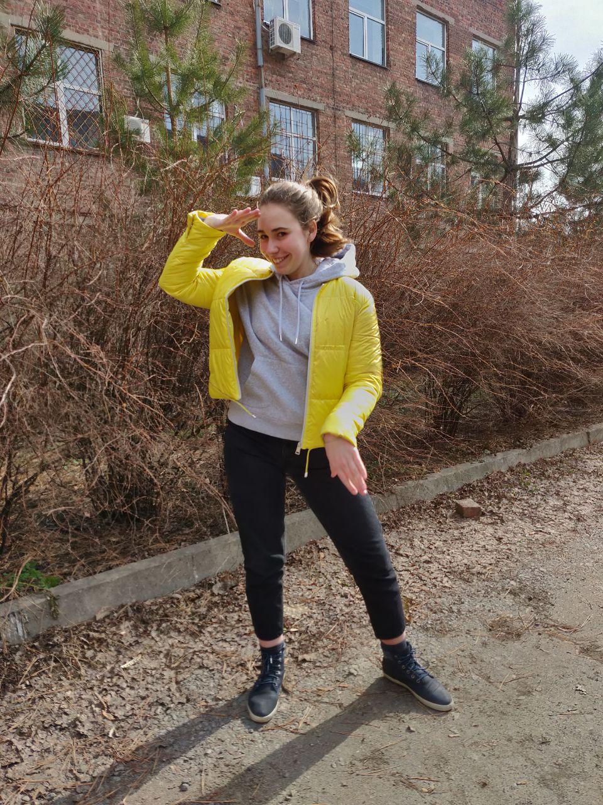

Май - последний месяц перед каникулами, последний в учебном году. Весенняя сессия, множество контрольных и самостоятельных, и каникулы ! Про сессии, контрольныхе и прочее можно рассказать еще много, об этом всем вы можете прочитать на предыдущих страничках.
